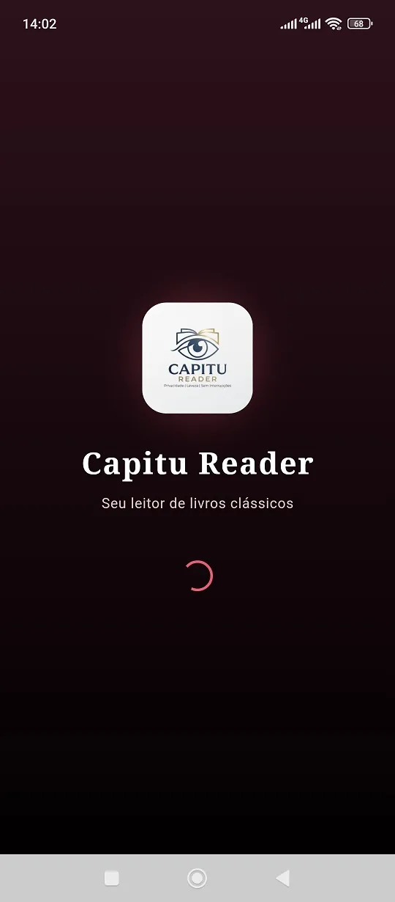
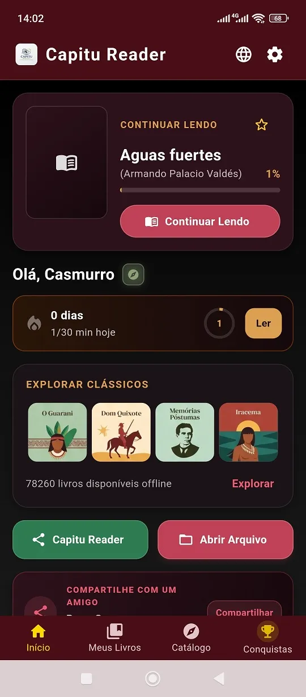
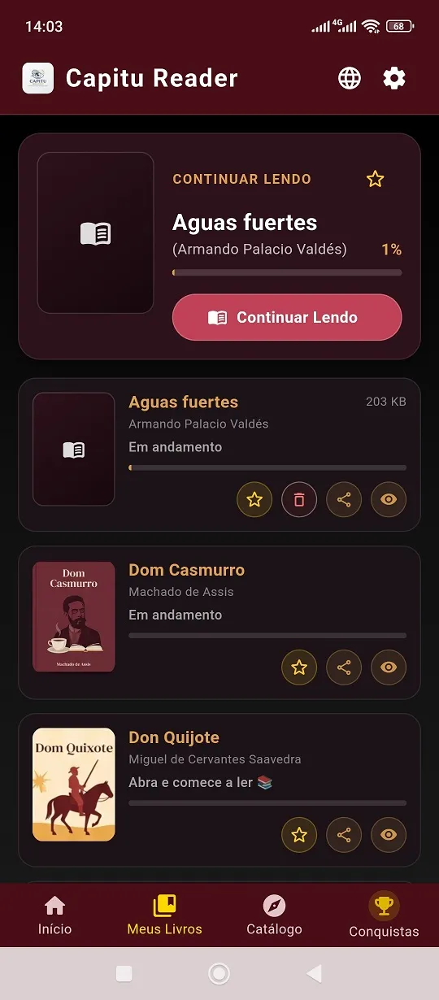
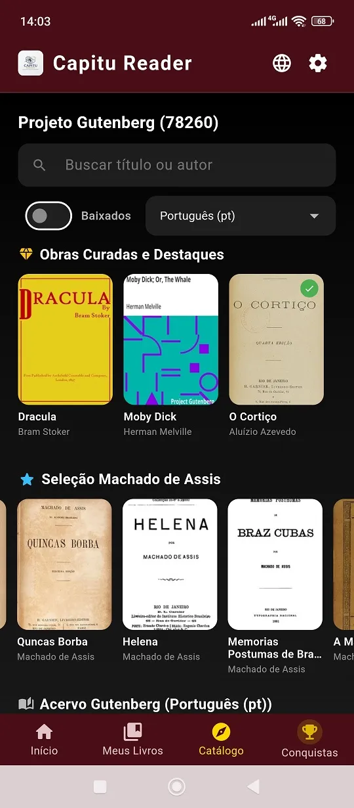
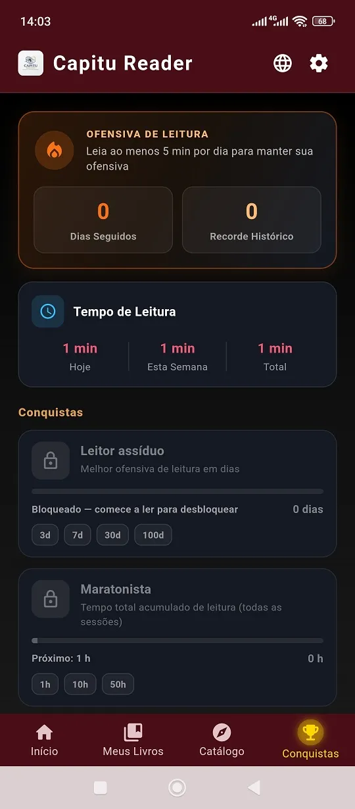
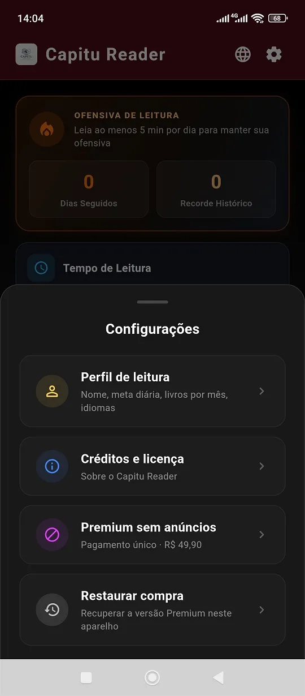
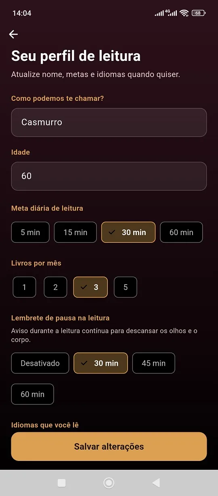

Sua biblioteca de clássicos e o hábito de leitura diário que você sempre quis. Um leitor imersivo, livre de distrações na hora da leitura e repleto de conquistas fora dela.
Desenvolvemos o Capitu com uma premissa clara: a experiência dentro do livro precisa ser pura, silenciosa e confortável para a sua visão.
Aproveite a flexibilidade do formato EPUB com ajuste de fonte e texto fluido (reflow), ou a renderização precisa de PDFs pesados através do motor nativo ultra-rápido.
Proteja seus olhos em leituras noturnas. Alterne entre temas sépia, papel antigo, escuro amolado e aplique o filtro de luz quente para evitar a fadiga ocular.
Sua estante pessoal sempre organizada A→Z. Defina seu objetivo principal de leitura, avalie obras concluídas e acesse rapidamente o histórico de PDFs recentemente abertos.
Diferente de outros aplicativos que enchem a página do livro com anúncios e pop-ups irritantes, o Capitu mantém a página do livro intacta. As métricas de streak, conquistas e desafios são celebradas antes e depois da sua sessão de leitura.
Ler mais não precisa ser um esforço. Com o sistema inteligente do Capitu Reader, você define sua meta diária de tempo (5, 15, 30 ou 60 minutos) e acompanha sua evolução dia a dia.
Veja o anel de progresso se preencher à medida que você lê seus livros favoritos.
Mantenha sua chama acesa! O app alerta visualmente a partir das 21h caso sua meta ainda não tenha sido cumprida.
Complete 5 dias com 5+ minutos para desbloquear desafios extras de leitura rotativos.
7 dias consecutivos de leitura!
Alcance sequências de 3, 7, 30 e 100 dias de leitura contínua.
Acumule 1h, 10h e até 50h dedicadas à leitura de livros.
Conclua a leitura legítima de 5, 20 ou 50 e-books completos.
Leia obras em idiomas além da sua língua nativa configurada.
Faça o download e descubra novas obras no catálogo curado.
Compartilhe o aplicativo e o amor pelos livros com seus amigos.
Acesse diretamente no aplicativo o acervo integrado com o Project Gutenberg e nossas Listas Editoriais Curadas. Encontre obras organizadas por autores, idiomas e coleções temáticas.
Design moderno, limpo e pensado nos mínimos detalhes para facilitar sua leitura e organização de e-books. Clique em qualquer imagem para ampliar.







Tudo o que você precisa saber sobre o Capitu Leitor PDF/EPUB PREMIUM.
Sim! Você pode baixar o aplicativo gratuitamente na Google Play Store, ler seus próprios arquivos EPUB e PDF e acessar todo o catálogo curado de obras clássicas de domínio público sem pagar nada.
O aplicativo oferece suporte completo ao formato EPUB (com ajuste dinâmico de texto, tamanho de fonte e temas) e ao formato PDF (renderizado em alta fidelidade pelo mecanismo nativo pdfrx).
Não. Todos os seus livros locais e obras já baixadas do catálogo ficam armazenados no seu dispositivo e podem ser lidos 100% offline em viagens, voos ou locais sem sinal.
Você escolhe sua meta diária de leitura (ex: 15 minutos). A cada dia que cumpre a meta, sua sequência (streak) aumenta. À medida que você lê, desbloqueia até 6 troféus/badges diferentes (Assíduo, Maratonista, Bibliotecário, Poliglota, Explorador e Embaixador) para celebrar sua dedicação.
A compra da Versão Premium é um pagamento único (sem mensalidade) feito via Google Play IAP. Ela remove todos os anúncios do aplicativo e garante acesso antecipado aos futuros recursos exclusivos.
Junte-se a leitores que estão transformando minutos diários em livros concluídos com o Capitu Leitor PDF/EPUB PREMIUM.
Baixar Grátis na Google Play